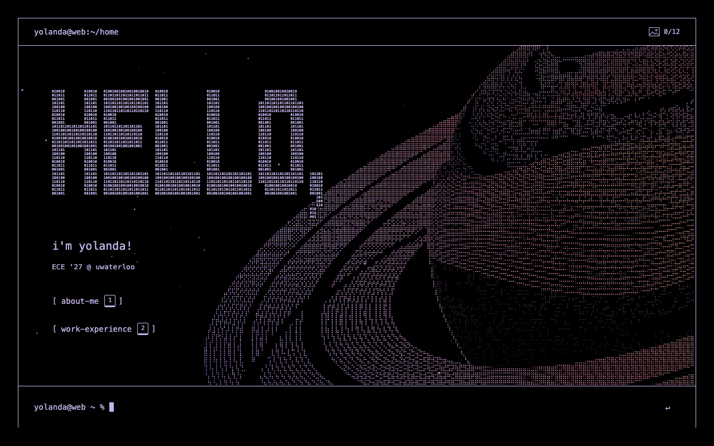
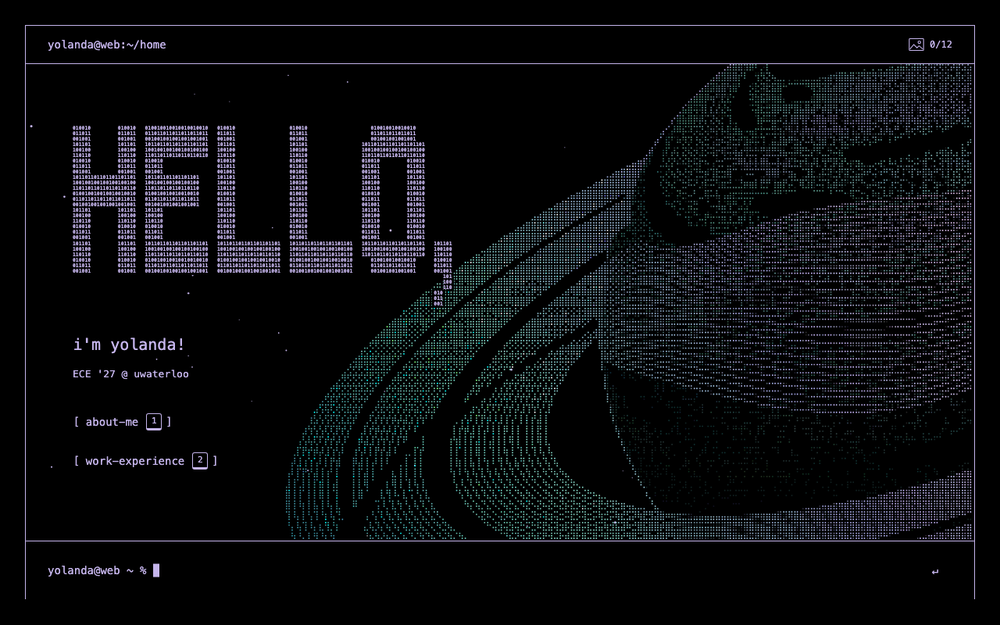
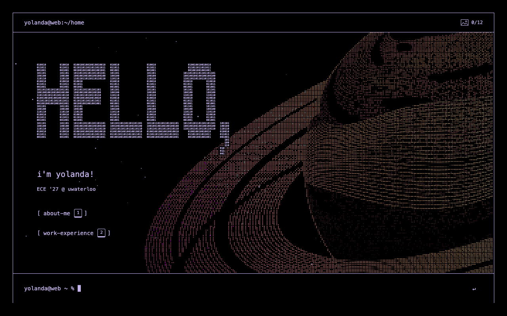
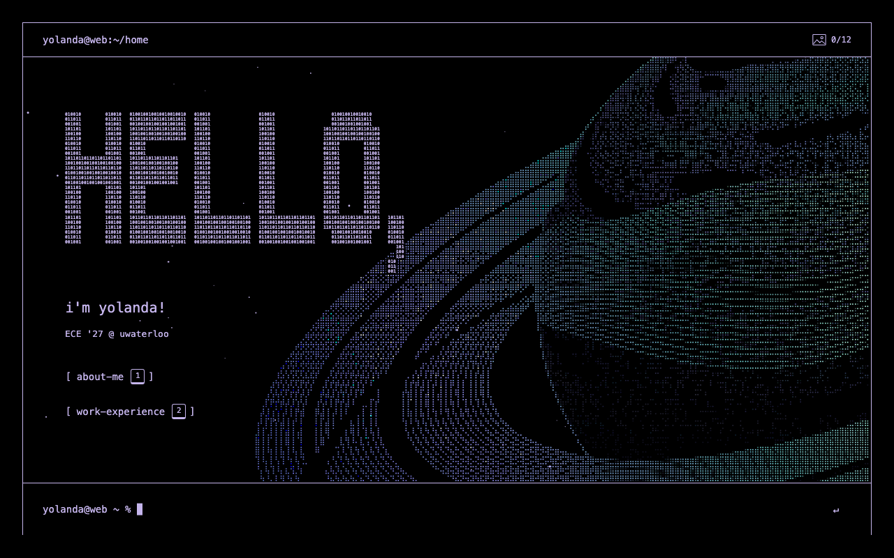

01 · Orchid dusk

Lavender, orchid and peach. Closest to your current purple, with a warmer illuminated edge.
Coloured stippling over the original ringed form. The terminal stays lavender and black. Four palettes, shown at the same resting orientation.

Lavender, orchid and peach. Closest to your current purple, with a warmer illuminated edge.

Deep teal, sea glass and lilac. Cooler and quieter, with a pearlescent ring.

Plum, rose and amber. Warmest of the four; the strongest connection to the flower reference.

Indigo, periwinkle and mint. More celestial, with a cool luminous rim.
Select a palette, then drag the planet or focus it and use the arrow keys.
Local concept study. Colour and surface texture are provisional; existing movement code is retained.